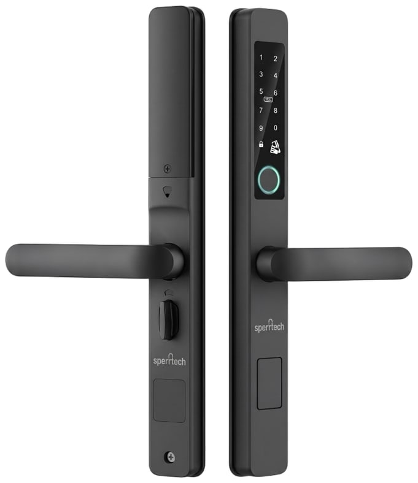
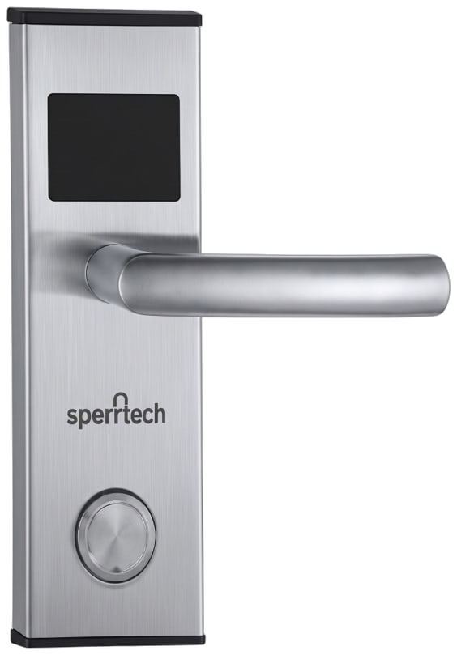

Akıllı
Kilit Kataloğu
Yüz tanıma · Parmak izi · Şifre · Kart · Uzaktan erişim
2026



Özgür Yapı Alüminyum0538 799 42 70
Yüz tanıma · Parmak izi · Şifre · Kart · Uzaktan erişim
2026


Sperrtech, Özgür Yapı Alüminyum’un akıllı kilit markasıdır. Alüminyum doğrama sektöründeki tecrübemizi kapı ve pencere güvenliğine taşıyoruz; satış öncesinden satış sonrasına yanınızdayız.
Kapı ve pencere sistemlerini bilen bir ekiple çalışırsınız; kilidi profile ve kapıya göre seçeriz.
Bölgesel servis ve yedek parça desteğiyle kesintisiz kullanım.
Alüminyum, ahşap, çelik ve cam kapılara uygun montaj desteği.
Birebir değişim ve servis garantisi.
Ana giriş kapıları için kameralı, ekranlı ve temassız geçişli modeller.
AER22 · AER77 · AEL30Alüminyum, ahşap ve cam kapılar için; yüzeye monte ve silindir seçenekleri dahil.
AEL38 · AEZ08 · AEB05 · AEN01 · AES01Pencere ve dolaplar için şifreli çözümler.
AEC01 · AEGC01Yönetim yazılımı ve kart kodlayıcıyla çalışan kartlı oda kilitleri.
AEJ17 · AEJ62Dört grupta 12 model. Her modelin ayrıntılı sayfası ilerleyen bölümdedir.
3D yüz tanıma, 4,5 inç ekran, 2 MP kamera ve tam otomatik kilitleme tek gövdede.
| Açma yöntemleri | 3D yüz tanıma, parmak izi, şifre, kart, mekanik anahtar, uygulama (Tuya Wi-Fi) |
|---|---|
| Geçici / sahte şifre | Süreli şifre ve sahte (anti-peep) şifre |
| Kamera ve ekran | 2 MP kamera, 4,5 inç ekran |
| Özellikler | Uzaktan açma, zil fotoğrafı, ses değiştirme, kızılötesi aydınlatma |
| Güvenlik | Tam otomatik kilitleme, zorlama alarmı, deneme-yanılma uyarısı, kilit durumu sorgulama, giriş-çıkış kayıtları, düşük pil uyarısı |
| Malzeme | Alüminyum alaşım |
| Kapı kalınlığı | 40–120 mm |
| Güç | Lityum batarya, USB acil şarj |
| Dil | Çince ve İngilizce; 8 dil seçeneği |
| Kilit gövdesi | 24/30 standart kilit gövdeleriyle uyumlu; gövde ayrı temin edilir |
| Opsiyonlar | Avuç içi damar tanıma, parmak damarı tanıma, TTLock uygulaması |
Yağmura ve neme açık ana girişler için: ön ve arka paneli IP66 korumalı, görüntülü interkomlu giriş kilidi.
| Açma yöntemleri | Yüz tanıma, parmak izi, şifre, kart, mekanik anahtar, Tuya uygulaması, interkom, uzaktan açma, uygulamadan geçici şifre |
|---|---|
| Kapasite | 10 yönetici, 500 kullanıcı |
| Özellikler | Görüntülü interkom, elektronik zil, HD kamera, otomatik açma ve kilitleme, yarı iletken parmak izi sensörü, yüksek torklu sessiz motor, tam sesli yönlendirme, renkli ortam aydınlatması |
| Malzeme | Alüminyum alaşım |
| Kapı kalınlığı | 50–100 mm |
| Güç | 4200 mAh lityum-iyon batarya, acil şarj |
| Koruma sınıfı | IP66 (ön ve arka panel) |
| Dayanım | −30 °C ile 100 °C; 120 saat tuz püskürtme testi |
| Kilit gövdesi | 6068, 7068, 5072, 5572, 6085, 7085, 6590, 6592 |
| Renk seçenekleri | Mat siyah, mat gri, gümüş, antik bronz |
| Opsiyonlar | Uzaktan kumanda |
Isı yalıtımlı alüminyum kapılar için yüz tanımalı, ön ve arka paneli IP68 korumalı kilit.
| Açma yöntemleri | Yüz tanıma, parmak izi, şifre, kart, geçici şifre, mekanik anahtar, uzaktan açma, Tuya uygulaması (TTLock opsiyonel) |
|---|---|
| Kapasite | 300 kullanıcı |
| Parmak izi sensörü | Yarı iletken |
| Malzeme | Alüminyum alaşım |
| Güç | 3200 mAh lityum batarya, Type-C acil şarj |
| Silindir | C sınıfı güvenlik silindiri, 2 yedek anahtar |
| Koruma sınıfı | IP68 (ön ve arka panel su geçirmez) |
| Çalışma koşulları | −20 °C ile 60 °C; %20–93 bağıl nem |
| Dil | Çok dilli |
| Renk seçenekleri | Siyah, antik kırmızı, gri, gümüş |
Isı yalıtımlı alüminyum kapılar için IP68 korumalı parmak izli kilit; 3585 kilit gövdesiyle birlikte gelir.
| Açma yöntemleri | Parmak izi, şifre, geçici şifre, IC kart, mekanik anahtar, Tuya Wi-Fi |
|---|---|
| Kapasite | 300 kullanıcı |
| Malzeme | Alüminyum alaşım |
| Güç | 4 × AAA pil |
| Çalışma sıcaklığı | −20 °C ile 70 °C |
| Koruma sınıfı | IP68 (hava ve su geçirmez yapı) |
| Dil | İngilizce, Rusça, Arapça, Endonezce, Tayca |
| Kilit gövdesi | 3585 kilit gövdesi dahil |
Ahşap kapılar için çinko alaşım gövdeli, parmak izli kol kilidi.
| Açma yöntemleri | Parmak izi, şifre, kart, mekanik anahtar, uygulama (Tuya veya TTLock, Bluetooth) |
|---|---|
| Kapasite | 100 parmak izi, 100 kart, 100 şifre (6–12 hane) |
| Tanıma doğruluğu | Hatalı kabul < %0,001; hatalı ret < %0,1 |
| Malzeme | Çinko alaşım |
| Uygun kapılar | Ahşap kapı |
| Kapı kalınlığı | 35–55 mm (55–80 mm için ek aksesuar) |
| Mekanizma ömrü | 100.000 çevrim |
| Anahtar | 2 adet |
| Güç | 4 × AAA pil, Type-C USB acil güç |
| Akım | Bekleme < 50 µA; çalışma < 200 mA |
| Çalışma koşulları | −25 °C ile 45 °C; %20–93 bağıl nem |
| Renk seçenekleri | Siyah, füme, altın, gümüş |
Cam kapılar için parmak izli akıllı kilit: alüminyum alaşım gövde ve C sınıfı silindir.

| Açma yöntemleri | Parmak izi, şifre, mekanik anahtar, IC kart, geçici şifre, mobil uygulama (Tuya; TTLock opsiyonel) |
|---|---|
| Kapasite | 100 şifre |
| Malzeme | Alüminyum alaşım + ABS |
| Yüzey | Elektroforez + dokulu kaplama |
| Silindir | C sınıfı |
| Güç | 4 × AA pil |
| Renk seçenekleri | Siyah |
40–90 mm kapılar için yüzeye monte, parmak izli ve şifreli kilit.

| Açma yöntemleri | Şifre, parmak izi, kart, mekanik anahtar, uygulama (Tuya Bluetooth) |
|---|---|
| Geçici / sahte şifre | Geçici şifre ve sahte şifre |
| Güvenlik | Düşük pil uyarısı, kurcalama alarmı, elektronik saldırı koruması (anti-hacking) |
| Kapı kalınlığı | 40–90 mm |
| Malzeme | ABS + metal |
| Güç | 4 kuru pil, Type-C acil şarj |
| Dil | Çince ve İngilizce |
Parmak izi, şifre ve NFC kartla açılan akıllı silindir; 60–90 mm silindir boyu.

| Açma yöntemleri | Parmak izi, şifre, NFC kart, acil durum silindiri, uygulama (Tuya veya TTLock, Bluetooth) |
|---|---|
| Malzeme | Ön panel çinko alaşım; orta bölüm bakır + paslanmaz çelik; arka panel alüminyum alaşım |
| Silindir boyu | 60–90 mm |
| Güç | 3 × AAA alkalin pil |
Şifreyle açılan pencere kolu: sürgülü, üstten menteşeli ve vasistas pencereler için.
| Açma yöntemleri | Şifre, sahte şifre, acil açma (kolun yanındaki vidalar sökülerek) |
|---|---|
| Kapasite | 1 şifre grubu |
| Malzeme | Alüminyum alaşım + çinko alaşım |
| Güç | 4 × AA kuru pil |
| Uygun pencereler | Sürgülü kapı ve pencereler, sineklikli pencereler, üstten menteşeli pencereler, içe açılan ve vasistas pencereler |
| Renk seçenekleri | Siyah, gümüş, gri |
Şifreli ve kartlı, 304 paslanmaz çelik dolap kilidi.

| Açma yöntemleri | Şifre, kart |
|---|---|
| Özellikler | Kademeli güvenlik yönetimi; kalıcı veya tek kullanımlık şifre; aydınlatmalı tuş takımı; kilitliyken yanıp sönen gösterge; harici yedek güç |
| Güvenlik | Yanlış şifre ve yetkisiz kart alarmı, düşük voltaj alarmı, kurcalama alarmı |
| Malzeme | 304 paslanmaz çelik |
| Kapı kalınlığı | ≥ 1 mm (ince veya kalın her kapak) |
| Güç | 3 × AA alkalin pil |
| Akım | Bekleme ≤ 20 µA; çalışma ≤ 200 mA |
| Düşük pil alarmı | 3,7 ± 0,2 V |
| Çalışma koşulları | −15 °C ile +55 °C; %20–95 bağıl nem |
31 mm panel genişliğinde kartlı otel kilidi; otel yönetim sistemi ve kart kodlayıcıyla çalışır.
| Açma yöntemleri | Kart, anahtar |
|---|---|
| Yönetim sistemi | Klasik otel kilidi: otel yönetim sistemi, kart kodlayıcı, kartlar (yüksek / düşük frekans); el terminali yoktur |
| Panel genişliği | 31 mm |
Paslanmaz çelik gövdeli, kartla açılan otel kilidi; otel kilit gövdesiyle.
| Açma yöntemleri | Kart |
|---|---|
| Yönetim sistemi | Klasik otel kilit sistemi (yalnızca kartla açma); TTLock otel sistemi sürümünde şifreli kilit bulunur |
| Malzeme | Paslanmaz çelik |
| Ölçüler | 245 × 74 mm |
| Kilit gövdesi | Otel kilit gövdesi |
| Renk seçenekleri | Paslanmaz çelik, siyah, altın, antik kırmızı |
Proje için doğru modeli seçmenize yardımcı olacak özet tablo.
| Model | Yüz tanıma | Parmak izi | Şifre | Kart | Anahtar | Uygulama | Bağlantı | Geçici şifre | Güç | Koruma | Gövde |
|---|---|---|---|---|---|---|---|---|---|---|---|
| Yüz tanıma ve görüntülü kilitler | |||||||||||
| AER22 | Wi-Fi | Lityum batarya | – | 24/30 | |||||||
| AER77 | Wi-Fi | 4200 mAh Li-ion | IP66 | 6085 | |||||||
| AEL30 | Wi-Fi | 3200 mAh lityum | IP68 | – | |||||||
| Parmak izli ve şifreli kilitler | |||||||||||
| AEL38 | Wi-Fi | 4 × AAA | IP68 | 3585 | |||||||
| AEZ08 | Bluetooth | – | 4 × AAA | – | – | ||||||
| AEB05 | Uygulama | 4 × AA | – | – | |||||||
| AEN01 | Bluetooth | 4 kuru pil | – | – | |||||||
| AES01 | Bluetooth | – | 3 × AAA | – | – | ||||||
| Pencere ve dolap kilitleri | |||||||||||
| AEC01 | Bağımsız | – | 4 × AA | – | – | ||||||
| AEGC01 | Bağımsız | – | 3 × AA | – | – | ||||||
| Otel kilit sistemleri | |||||||||||
| AEJ17 | Kart sistemi | – | – | – | – | ||||||
| AEJ62 | Kart sistemi | – | – | – | Otel tipi | ||||||
Ürün özellikleri modele ve siparişe göre değişebilir. Güncel bilgi için satış temsilcimize danışın.
Kilit gövdesi bilgisi verilen modeller ve iki yaygın gövdenin ölçüleri. Ölçüler milimetredir.
Kapı kenarındaki yuvaya yerleştirilir, alın plakası vidalarla sabitlenir; panel milleri gövdeye geçirilir. Çizimler şematiktir.
| 24/30 standart gövde | AER22 |
|---|---|
| 3585 | AEL38 (gövde dahil) |
| 6068, 7068, 5072, 5572, 6085, 7085, 6590, 6592 | AER77 |
| Otel kilit gövdesi | AEJ62 |
| Tuya Wi-Fi ağ geçidi | Bluetooth modellerin uzaktan yönetimi için (AEZ08, AEN01, AES01). |
|---|---|
| Otel kart kodlayıcı | AEJ17 ve AEJ62 otel kilit sistemleri için kart yazıcı. |
Gömme gövdeli kapı kilitleri için temel adımlar. Montaj, bölge servis ekibimiz tarafından da yapılabilir.
Kilit gövdesini kapı profilindeki yuvaya yerleştirip alın vidalarıyla sabitleyin.
Dış paneli kapıya yaslayın, bağlantı kablosunu kapıdaki delikten iç panele taşıyın.
Ön ve arka paneli kapının iki yüzüne yerleştirip bağlantı vidalarıyla sıkın.
Pili takın; parmak izi, yüz, kart ve şifre tanımlarını yapıp uygulamayla eşleştirin.
Adımlar genel bilgilendirme amaçlıdır; ayrıntılar için ürünle gelen montaj kılavuzuna bakın.
| AEZ08Ahşap Kapı Parmak İzli Kol Kilidi |
|
|---|---|
| AEB05Cam Kapı Akıllı Kilidi |
|
| AEN01Yüzeye Monte Akıllı Kapı Kilidi |
|
| AES01Akıllı Silindir Kilit |
|
| AEC01Şifreli Akıllı Pencere Kolu |
|
| AEGC01Akıllı Dolap Kilidi |
|
Kilitlerimizin çoğu Tuya Smart / Smart Life veya TTLock altyapısıyla çalışır. Kapıyı telefondan yönetin, kimin ne zaman girdiğini görün.

Wi-Fi bağlantılı modellerde kapıyı her yerden açın, kilit durumunu anlık görün.
Süreli veya tek kullanımlık şifre üretin; misafir ve servis için anahtar teslimi gerekmez.
Kim, hangi yöntemle, ne zaman girdi: tüm geçmiş uygulamada.
Hatalı deneme, sabotaj ve düşük pil durumunda bildirim alın.
Uygulama özellikleri modele ve bağlantı tipine göre değişir. Uzaktan açma ve anlık bildirimler için Wi-Fi bağlantısı gerekir. Ekran görüntüleri temsilidir. Tuya Smart, Smart Life ve TTLock ilgili sahiplerinin ticari markalarıdır.
Konut, otel, ofis ve toplu proje ihtiyaçlarınızda ürün seçimi, keşif ve montaj planlaması için bize ulaşın.